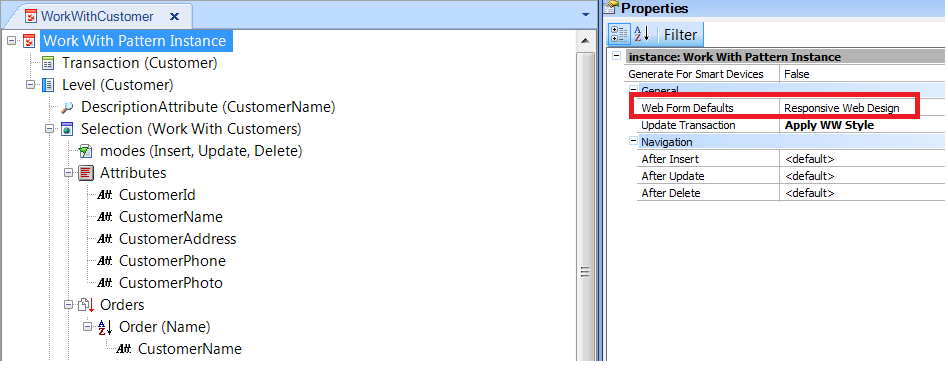
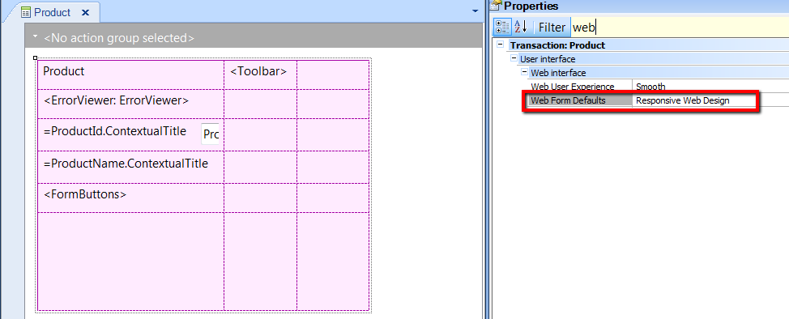

| Determines the default Web form to be generated for Web Transactions and Work With Pattern objects. This property works at version level, and is available for Web Transactions and Work With Pattern instances.
| Responsive Web Design | The form of the object will be generated using the Web Abstract Editor. As a result, the design will be responsive. | | Previous versions compatible | The form of the object will be generated using the HTML Editor. This is the default value. |
When there are Web Transaction forms and objects automatically generated by the Work With Pattern, the user can decide whether the web form is going to be initialized using the HTML Editor or the Web Abstract Editor. If the initialization is done using the latter, the resulting design will be responsive.
The property at Web Transaction level and at Work With Pattern instance level inherits its values from the value set at version level. This value can be changed for each web transaction and Pattern instance.

Web Form Defaults property for Work With Pattern Instances

Web Form Defaults property for Web Transactions
Note:
- This property also applies when the menu option Apply Default (for Win and Web Forms) is executed for a web form.
- When the Web Form Defaults property is set to Responsive Web Design, the following happens in the KB:
- When using a MasterPage, keep the WebPanel and associated MasterPage using the same Web Form Defaults property value; do not mix them as unexpected behavior may occur.
Objects: Transaction
Platforms: Web(.Net, Java)
Web Abstract Editor
HTML Editor
Default Web Form Editor property
|